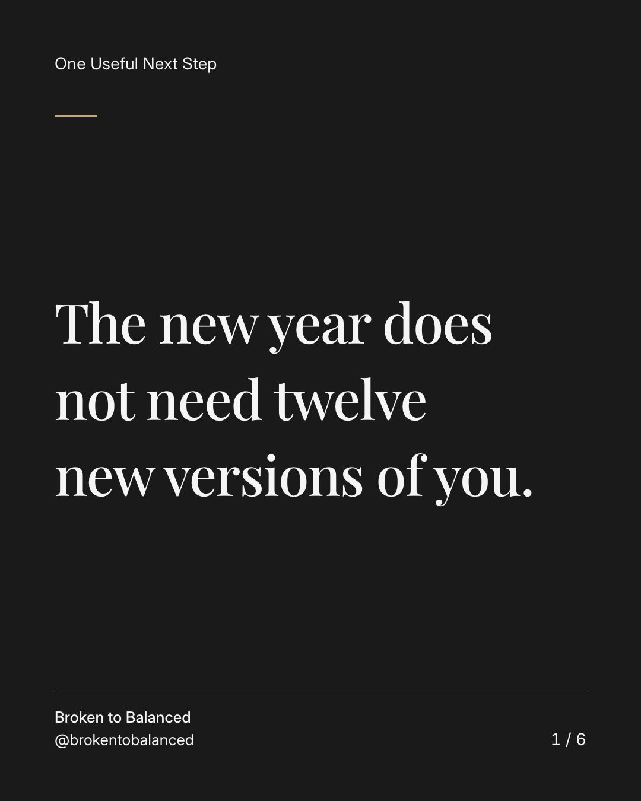
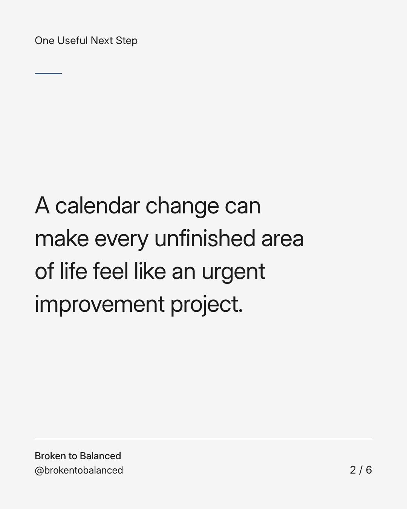
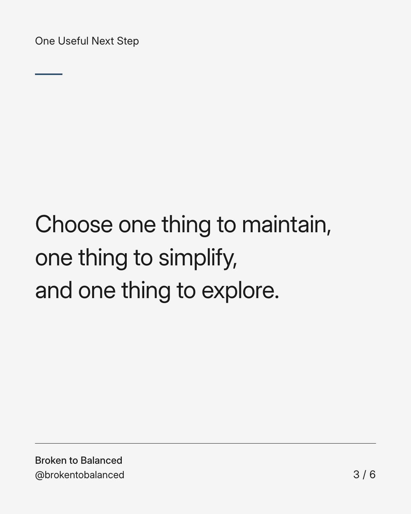
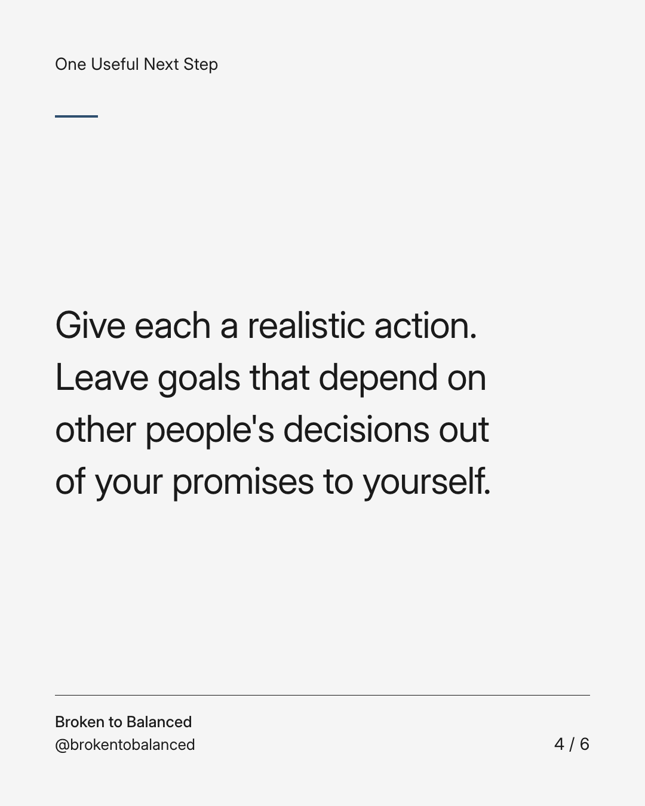
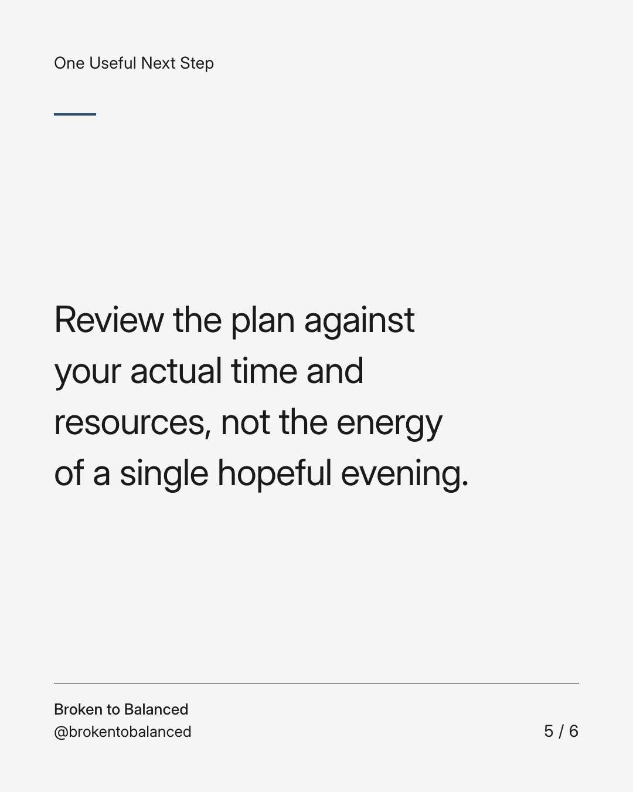
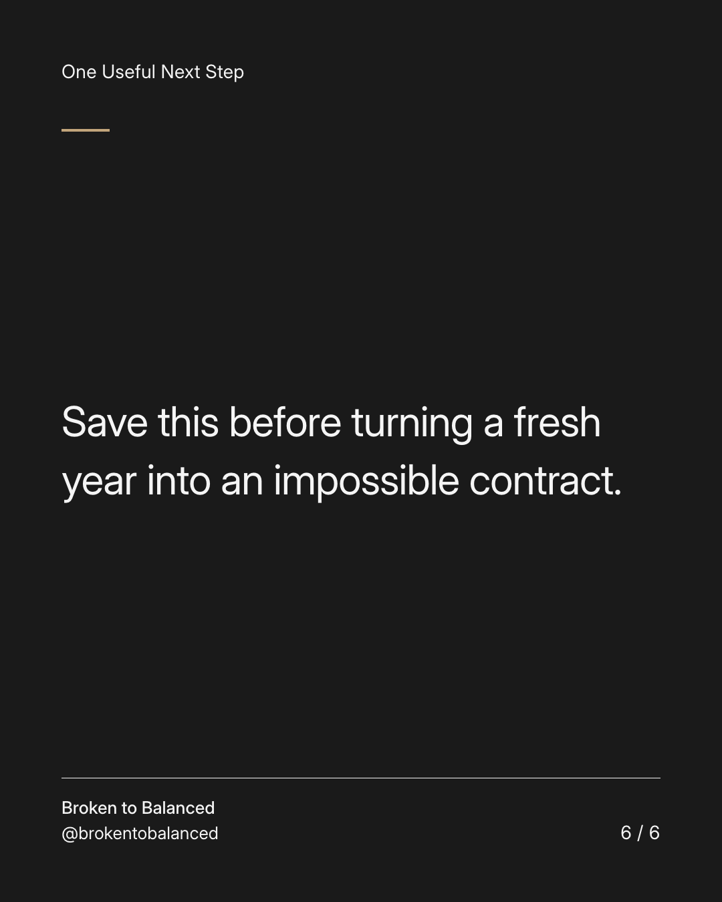

Exact text and accessibility text
The new year does not need twelve new versions of you.
Slide 1 of 6. The new year does not need twelve new versions of you.


Exact text and accessibility text
A calendar change can make every unfinished area of life feel like an urgent improvement project.
Slide 2 of 6. A calendar change can make every unfinished area of life feel like an urgent improvement project.


Exact text and accessibility text
Choose one thing to maintain, one thing to simplify, and one thing to explore.
Slide 3 of 6. Choose one thing to maintain, one thing to simplify, and one thing to explore.


Exact text and accessibility text
Give each a realistic action. Leave goals that depend on other people's decisions out of your promises to yourself.
Slide 4 of 6. Give each a realistic action. Leave goals that depend on other people's decisions out of your promises to yourself.


Exact text and accessibility text
Review the plan against your actual time and resources, not the energy of a single hopeful evening.
Slide 5 of 6. Review the plan against your actual time and resources, not the energy of a single hopeful evening.


Exact text and accessibility text
Save this before turning a fresh year into an impossible contract.
Slide 6 of 6. Save this before turning a fresh year into an impossible contract.
Exact caption
Plain-text fallback: select and copy the caption.